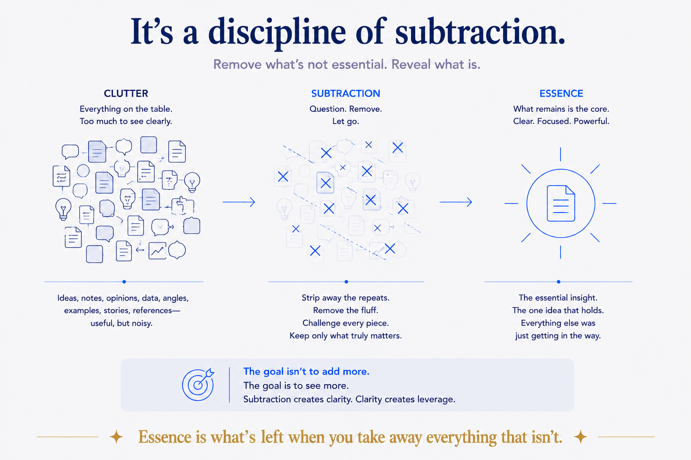

The word I kept leaving out
For a while I described what drives me with two words: structure and deliberate. Build the right shape; choose it on purpose. Both true, and both incomplete. There was a third word doing most of the work, and I'd never named it: essence.
Before I structure anything, I look for its essence — the one thing it's actually about. The single claim under an article. The core business concepts under a data model, not every table. The one move a method turns on. I distil to what's essential and drop the rest. It's so automatic I'd stopped noticing it was a choice.
Naming it changed how I see the other two. Structure and deliberate aren't the foundation. Essence is. They're what you do after you've found the core.
Essence keeps structure honest
Structure without essence has a failure mode, and it's a common one: over-building. Shape for its own sake. The vault so elaborate that maintaining it eats the time it was meant to save. The data model that captures every attribute and misses the point. You end up beautifully organised around the wrong thing.
Deliberate has its own version: bureaucracy. Choosing carefully, on purpose, between things that don't matter. A rigorous process wrapped around a question no one needed answered.
Essence is the antidote to both, because it comes first and decides the rest. It tells you what deserves structure, and what is worth choosing. Get the core right and the structure falls out of it. Get it wrong and no amount of shape or discipline saves you — you've just made the wrong thing tidy.
That's the order, and the order matters: find the essence, then give it structure, then place it deliberately. Skip the first step and the other two have nothing true to work on.
It's a discipline of subtraction
Once you see essence as the drive, you see the same move everywhere in how good work gets made.
A concept earns one word — a memorable name for a single idea, so it can be pointed at and reused. A note holds one thought, not a folder's worth. A data model names the handful of concepts a business actually runs on, not the schema dump. A thesis fits in a sentence, or it isn't finished. A recommendation says the one true thing, not five hedged ones.
Every one of those is subtraction. You're not adding cleverness; you're removing everything that isn't the core until only the core is left. The hard part was never generating more. It's knowing what to leave out — and being willing to.

The honest part
Essence-seeking has a failure mode too, and it's the opposite of over-building: reductionism. You can distil so hard that you cut the nuance that actually mattered. "It's basically just X" is sometimes insight and sometimes a way of not understanding something. Some things are irreducibly complex, and flattening them into a tidy one-liner is a lie that feels like clarity.
So the discipline isn't "make everything simpler." It's find the real essence — the core that survives scrutiny, not the first neat summary that comes to hand. A good distillation loses the ballast and keeps the load-bearing parts. A bad one loses the load-bearing parts and keeps whatever sounded quotable. Knowing the difference is the whole skill, and it's not automatic. It's judgement, and it stays yours.
Structure, deliberate, essence
So there are three words, not two, and they run in an order.
Essence — find the core it's really about. Structure — give that core a shape that holds. Deliberate — place it on purpose, nothing by accident. Essence is the one that makes the other two mean something. Structure beats magic — but only once you know what you're structuring.
The recipe is here for free, as always. If the thing you need to find the essence of is a tangled real domain — a business, a data estate, a knowledge base that grew by accident — that's the harder version, and it's the conversation to have. Finding the core of someone else's mess is most of the work I do.
Find the essence first. The rest is easier than it looks, once you know what the thing is actually about.